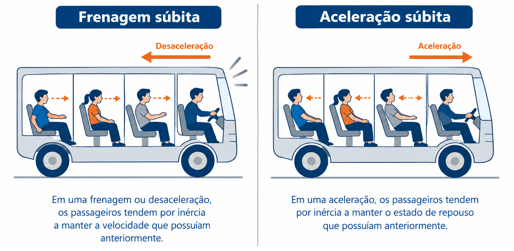

📚 Resumo
A 1ª Lei de Newton (Princípio da Inércia) afirma que um corpo tende a manter seu estado de repouso ou de movimento retilíneo uniforme (MRU), a menos que seja atuado por uma força resultante externa não nula.
Equilíbrio Dinâmico ou Estático: $\vec{F}_{res} = 0 \iff \vec{a} = 0 \iff \vec{v} = \text{constante}$
Massa: É a medida quantitativa da inércia de um corpo.
📖 1ª Lei de Newton: A Lei da Inércia
1. O Conceito de Inércia
Inércia é a propriedade da matéria de resistir a variações em seu estado de movimento. Corpos de maior massa possuem maior inércia, ou seja, oferecem maior resistência a serem acelerados ou freados.

2. Condição de Equilíbrio ($\vec{F}_{res} = 0$)
Quando a força resultante sobre um corpo é igual a zero ($\vec{F}_{res} = 0$), o corpo está em equilíbrio. Existem dois tipos de equilíbrio:
- Equilíbrio Estático: O corpo está em repouso ($\vec{v} = 0$).
- Equilíbrio Dinâmico: O corpo move-se em linha reta com velocidade constante (MRU, $\vec{v} \neq 0$).
3. Referenciais Inerciais
A 1ª Lei de Newton é válida apenas em referenciais inerciais, que são sistemas de referência que estão em repouso ou em movimento retilíneo uniforme entre si (sem aceleração).
💡 Física em Ação
🚗 Cinto de Segurança
Em uma colisão, o automóvel para bruscamente, mas os passageiros tendem a continuar em movimento retilíneo uniforme por inércia. O cinto exerce a força necessária para alterar esse movimento e proteger o ocupante.
🚀 Sondas Espaciais
No espaço profundo, longe da gravidade de estrelas e sem atrito atmosférico, uma sonda espacial desligada continua se movendo indefinitidamente em linha reta e com velocidade constante sem gastar combustível.